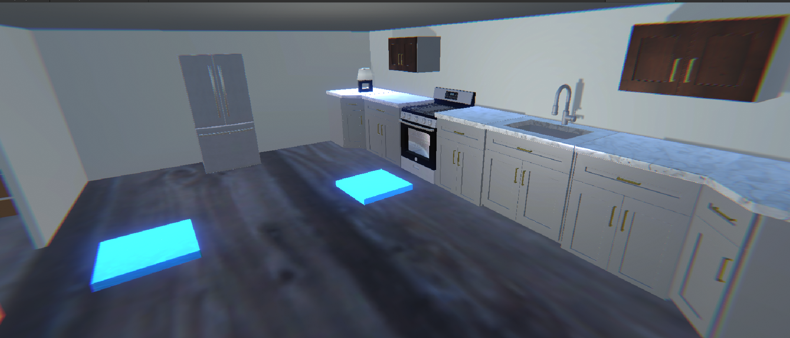
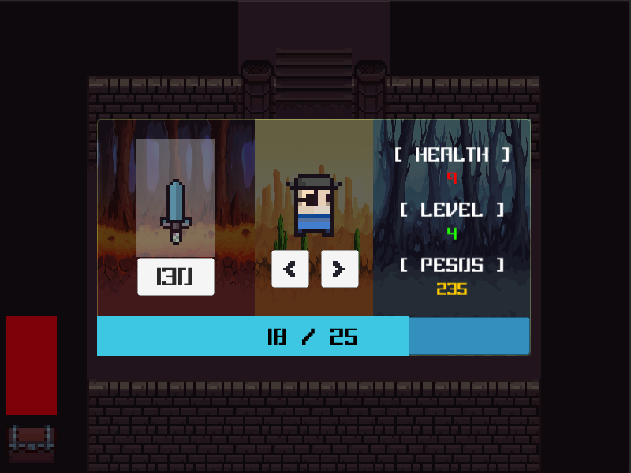

Work #1
> APK FILE
This is a VR puzzle game where the user is required to complete certain tasks in order for
the doors to open. Animations are included, as well as sounds to enhance the gameplay. It is simple and easy
to play as this game is not very complicated.
Initially, I wanted to make the theme horror. But due to some
compilcations, I gave up on it in the end and then went for a minimalistic theme as I could use it to relate
to my life. I designed the house to only have 3 rooms, the kitchen, room and living room as those are the
rooms people and family members often use in their daily lives. In the living room, there is a piano and
that is where the first puzzle starts because I play piano hence it starts from the piano. My relationship
with my family is not the best, because I rarely talk to them which is why the house looks empty as it
signifies the bond between my family. In the room after the user completes all the puzzles, the user would
need to go to the final room to escape. The final room shows all the broken items as it signifies that the
relationship is not good. After the user presses all three buttons in order, the user can then escape
successfully.

Work #2
> APK FILE
> EXE FILE
This is a 2D dungeon game where you fight monsters with a sword and loot chests while moving
around. You are also able to upgrade your weapon via the menu button provided and can also select a
character of your choice. Animations are included, and to make the gameplay more interesting, you will get
pushed back when an enemy attacks you. The attack damage will be shown, and you can also heal your health
back using the healing fountains placed within the maps.
This was my first time doing 2D game using Unity,
therefore I had many problems trying to create this game while following tutorials. I designed this game
using a pixelated image that consisted of everything such as the floor, characters, weapons and more. I
changed the layout of the map, so that it is not the same as the one in the video. I also included more
characters so that the user can have more options to choose from. The background images of the stats page
were changed and the opacity of it were set to low because I did not want it to stand out. The user should
only be seeing the words and images as those are the things that should be emphasized on hence the images
are darkened in the background. The font family that I chose to use is a pixelated font as it suits the
game. Since the game is pixelated, using a pixelated font would match well with the game.

Work #3
> LINK TO PROTOTYPE
This application serves as my portfolio; Hence the target audience are people who want to
hire me. I have also added in some animations, illustrations as well as sound effects to make it more
interesting. Some illustrations are drawn by me, but some are taken from the plugin in Adobe XD. I did not
include many elements because I believe that portfolios should be simple, as the people who are hiring would
want to see my works and not the UI of the app.
Since it is my portfolio, I made sure that the application
describes my life or at least represents me because I want people to know how I am like. By reading the
about me page or seeing how the elements are used, people will be able to know what sort of person I am. In
the logo, there is a cat and a whale. The cat in the logo represents me because I feel that my personality
is somewhat similar to a cat. The whale represents freedom, because they are able to swim in an ocean where
there are no limits to exploration. I had some obstacles and problems in my past, so I want to show that I
want freedom from my past problems which is why the cat is reaching for the whale’s tail.
The colour scheme of my logo is light pink and blue, as they are complementary colours thus they match well
together. I used tones of blue as I did not want to introduce too many different colours as it would look to
weird. I also kept the design simple as possible as I did not want to cramp everything together. I also used
a different tone for my name, so that people can see it easier when it is being displayed in the app itself.
The colour scheme I have selected is monochromatic and complementary. As said above, monochromatic colours
are being used for my logo and also in the app itself. I used purple for some pages alongside with yellow as
both colours goes well with each other. As for the background of my app, I used black as to me yellow and
black when used nicely together can create a professional look.
The typography used is Merriwheather and Montserrat, as they both complement and match each other.

Work #4
> LINK TO PROTOTYPE
The target audience are the elderly people, but TOUCH has also reached out to many other
individuals form all religions and races, including children, youths, families, people with special and
healthcare needs and elderly. The learning style of the audience will be visual, read, and auditory.
The mission of the company is called to serve the needy and disadvantaged, we value every person and enable
them to
strengthen families - the foundation of society. The vision is Strong Families, Caring Generations, Enabled
Communities. TOUCH Community Services is a not-for-profit charity organisation in Singapore. They were
officially registered in 1992 and have been a member of the National Council of Social Service since 1994.
It first started in 1986 as a service for latch-key children in the neighbourhoods of Clementi and Jurong.
This small attempt then led to the organization become a multi-service organization with an integrated
network of services located at different parts os Singapore.
After engaging with my mobile app, the elderly would be able to map shapes to the given word. They will also
be able to understand which shapes are called what and they may learn new things. I will use elements to
show directions or instructions and also use different effects so that it is more appealing. Exercises
relating to money are also included thus, they would learn how to count money as well as knowing how much
each bills and coins are. To know if I have achieved the purpose, I can maybe test the product with my
grandma and grandpa and get their feedback.
The corporate colour of the company is red. The colour scheme I have selected is square and monochromatic.
The
colours in my colour palette would be the blue and red. The typography used is Helvetica and Sans Serif, as
they are easier to read for elderlies and also
complement each other.
Kinaesthetic is not used in my design as the elderly are only able to touch the screen. This app mostly
focuses on Aural learners, visual learners, and kinaesthetic learners. I will be using voice for the
auditory, therefore whenever the elderly does not understand the word, they can click on the speaker icon to
make the AI read out the word for them. As for Haptic, vibrations will be made each time the elderly selects
the wrong answer. This is because if there are no interfaces that provides tactile feedback to the elderly,
then the elderly would not know if they got the answer correct or wrong, as their sight is not good.
Work #5
> LINK TO APP
This is a simple app that I created using Android Studio. I learnt how to publish this app
to the playstore and I managed to make it successfully be uploaded to the playstore therefore that is
something I managed to accomplish. There were many errors and mistakes, but I eventually managed to fix it
and it worked the way I wanted it to work.
The theme is minimalistic as I did not want to cramp everything
together. I also used purple and aqua for the text because it matches well with the colour of the heading at
the top. The purpose of this app is to allow users to add islands, and note down new islands that they have
discovered. They can rate it afterwards, by clicking on the stars and it would then be saved into the list
which would be displayed to the user once the user taps on "SHOW LIST".
Work #6
> LINK TO APP
This is another simple app that I created using Android Studio and then published it to the
playstore. The target audience are people who like to draw, including adults. After they have finished
painting the canvas, they can then save it into their phone. The features included in this app are changing
the size of the pen, changing colour by just tapping on the colour wheel, saving the image and erasing what
has been drawn on the canvas.
I changed the background colour to light purple as I wanted to match it to the
colour of the heading at the top and also to differentiate the canvas area and the background area. If I
used white as the background area, the user would not know if there is any limit to the canvas size or not.
I also used white background for the differnt icons at the bottom so that it is easier to spot and find the
icons. It is also to enhance the appearance of the app so instead of just white, there is some other colours
there as well.